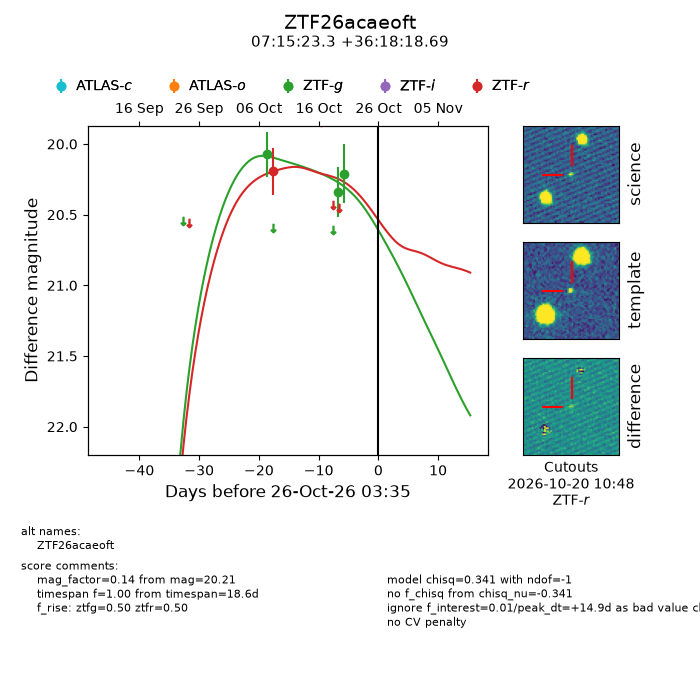
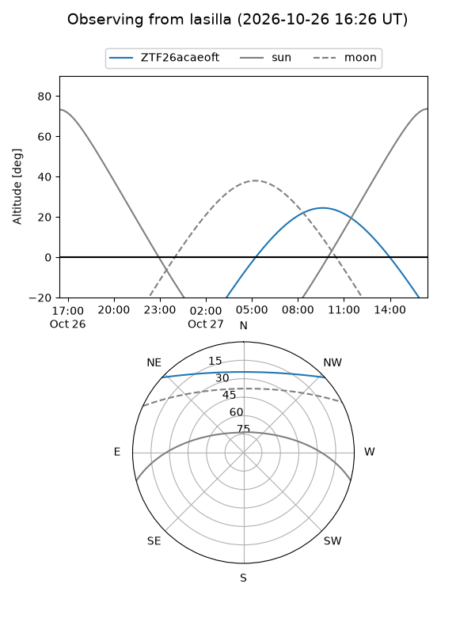
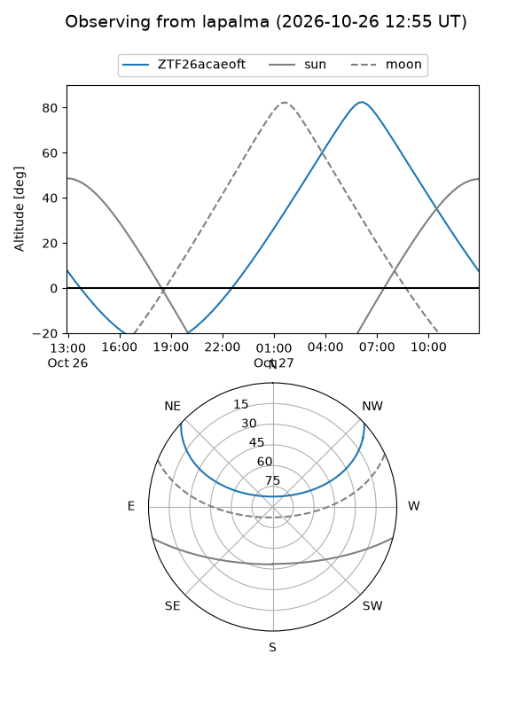
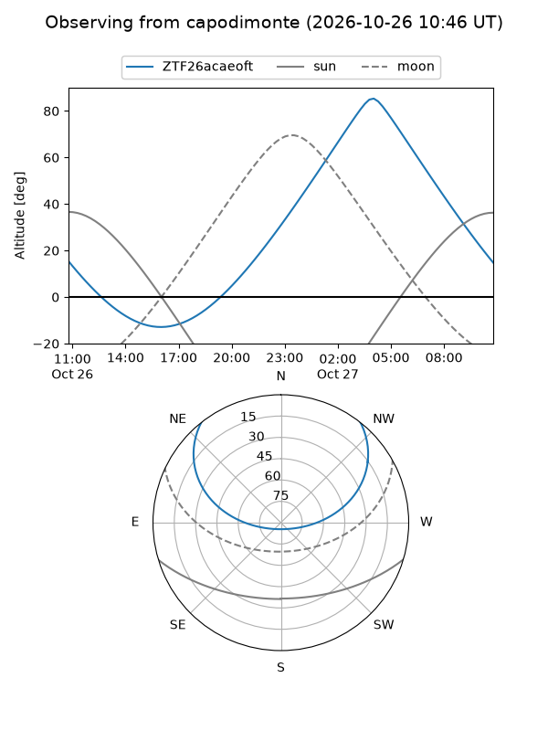
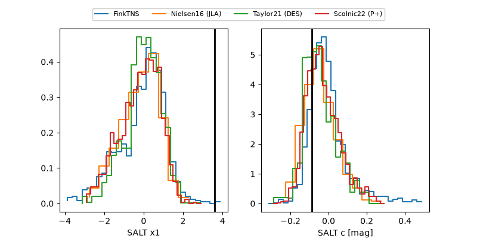

ZTF26acaeoft
Target ZTF26acaeoft at 2026-10-26 15:22
Aliases and brokers:
FINK-ZTF: ztf.fink-portal.org/ZTF26acaeoft
Lasair-ZTF: lasair-ztf.lsst.ac.uk/objects/ZTF26acaeoft
ALeRCE-ZTF: alerce.online/object/ZTF26acaeoft
Direct TNS query: direct search
alt names
ZTF26acaeoft (ztf,fink_ztf)
Coordinates:
equatorial (ra, dec) = 108.8471,+36.30519
equatorial (HMS+DMS) = 07:15:23.30,+36:18:18.69
galactic (l, b) = (181.5635,+20.16940)
Flags:
peak dt: +15.4
Photometry:
last ztfg=20.21, ztfr=20.19
3 ztfg, 1 ztfr detections
Lightcurve

Visibility



Additional plots
